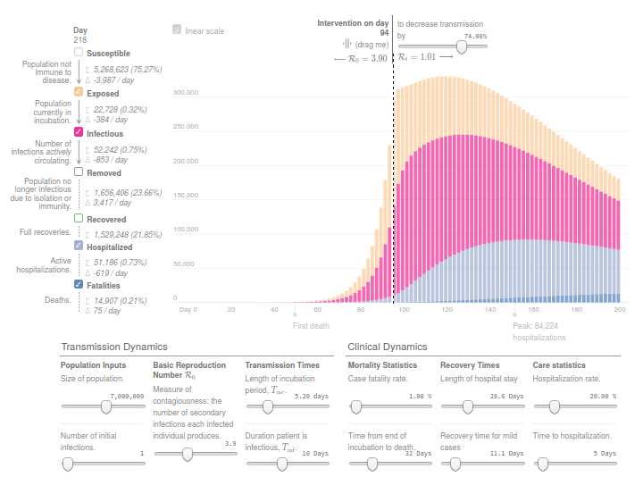

Data (&) Science (&) ...
personal projects and recommended links, considering that...
- "essentially all models are wrong, but some are useful". Box G. et al.
- "explicit better than implicit". The Zen of Python et al. (with exceptions).
I expect models being wrong, but their assumptions explicit.
Last update: Audio fingerprints(15/09/2024)
And previously...
Feedback welcome!
Content layout based on
startbootstrap-resume.
Custom charts generated with Plotly Express.
Uncool Data Science
(Written 13/12/2020, updated 17/06/2021. 10 min read)
After my first (somewhat disappointing) adventures in automatic causal discovery with CDT package, I go back to the topic with new experiments. Trying to get a better understanding of the following:
- the theoretical and practical limits of automatic causal discovery (also known as structure learning).
- its relation with main assumptions required to estimate causal effects from observational data, with and without graphical models
- and the involved methods and specifics for the bivariate example.
As there is some consensus on the need of assumptions to infer causality based on observational data, things get tricky about the details. Even researchers from different fields have diverse opinions on the preferible ways to express the requirements and limitations of the different methodologies: languages, notations, diagrams... For instance, Lauritzen on Discussion in Causality identifies up to 4 different formalisms or causal languages: structural equations, graphical models, counterfactual random variables and potential outcomes
It is also in question if it is possible to infer causality based on data and some automated algorithm. According to Judea Pearl:
"[...] machine learning systems, based only on associations, are prevented from reasoning about (novel) actions, experiments, and causal explanations."
Pearl postulates a three-level hierarchy, or "ladder of causation", where "questions at level i (i = 1, 2, 3) can be answered only if information from level j (j>=i) is available".
The logical consequence of Pearl's postulates is that automatic causal discovery based on observational data is not feasible in general. In other words, as Peters et al state in Elements of Causal Inference: "there is an ill-posed-ness due to the fact that even complete knowledge of an observational distribution usually does not determine the underlying causal model". Or according to Maclaren's et al, causal estimators may be unstable, and "lack of stability implies that [...] an achievable statistical estimation target may prove impossible". But, could automatic causal discovery be epistemically impossible in theory but useful in practice under any circumstances? In other words, is it possible to infer causality based on observations, an algorithm and some soft assumptions that are not explicitly predefining a causal model?
To answer properly the question we should, first of all, disambiguate the different meanings and goals of "causal inference", and even what a (causal) "model" is. Language ambiguity is a source of misunderstandings, even between the most brilliant people. As an example, the reply of Andrew Gelman to Pearl's controversial statements in the Book of Why:
"Pearl and Mackenzie write that statistics “became a model-blind data reduction enterprise.” Hey! What the hell are you talking about?? I’m a statistician, I’ve been doing statistics for 30 years, working in areas ranging from politics to toxicology. “Model-blind data reduction”? That’s just bullshit. We use models all the time"
“The Book of Why” by Pearl and Mackenzie https://t.co/hEMzlDa4wU
— Andrew Gelman (@StatModeling) January 8, 2019
It's probably not obvious that "models" referred by Pearl are "causal models", preferible causal diagrams, or any type of model that encodes causal information in a transparent and testable way. As Structured Causal Models (SCMs) also do via assignment functions.
There are several types of probabilistic graphical models that express sets of conditional independence assumptions via graph structure, including Directed Acyclic Graphs (DAGs) known as bayesian networks. DAGs can describe every conditional dependence and independence between the represented variables if Markov and Faithfulness hipothesis hold. And benefit from expressiveness and d-separation, a criteria that involves checking whether a set of vertices Z blocks all connections of a certain type between X and Y in a graph G, and reduces statistical independencies to connectivity in graphs.
But we still need stronger assumptions beyond Markov condition, faithfulness and d-separation to have a causal DAG. Whereas (probabilistic) DAGs entail observational distributions, causal DAGs entail interventional distributions. In Scheines's words:
"one might take a further step by assuming that when DAGs are interpreted causally the Markov condition and d-separation are in fact the correct connection between causal structure and probabilistic independence. We call the latter assumption the Causal Markov condition"
Moreover, the term "causal inference" can (ambiguously) refer both to causal learning or causal reasoning. The former being the inference of a causal model from observations or interventions. And the latter, estimating outcomes or effects (at individual or population level) based on a predefined causal model.
In relation to causal reasoning, an effect is identifiable if it can be estimated from data, given a set of assumptions. In case of Average Treatment Effect (ATE), also known as Average Causal Effect (ACE), the required assumptions for identifiability, to my understanding are:
-
Conditional exchangeability. Maybe the hypothesis with more possible enunciates and ambiguity I found.
I recognize myself still unable to identify subtle differences between the following terms: ignorability, unconfoundness, selection on observables,
conditional independence assumption (CIA), exogeneity, causal sufficiency... are all them exchangeable?
Thanks to Miguel Hernán et al's
Causal Inference Book
for shedding some light on this Tower of Babel full of synonyms and meronyms:
"[...] conditional exchangeability [...] often referred as “weak ignorability” or “ignorable treatment assignment” in statistics (Rosenbaum and Rubin, 1983), “selection on observables” in the social sciences (Barnow et al., 1980), and no “ommitted variable bias” or “exogeneity” in econometrics (Imbens, 2004)"
Or these words from Marcelo Perraillon's lectures:"Jargon, jargon, jargon: This assumption comes in many names, the most common perhaps is no unmeasured confounders. Other names: selection on observables, exogeneity, conditional independence assumption (CIA), ignorability"
- Consistency of treatment. And no interference. Combination of consistency and no interference is also known as Stable Unit Treatment Value Assumption (SUTVA) in (deterministic) potential outcomes. See Neal's Introduction to Causal Inference.
- Positivity (a.k.a. overlap a.k.a. common support). Or existence of all posible values of treatment and outcome.
Given the previous assumptions hold, several identifiability methods can be used to convert our causal estimand in a statistical formula that does not contain any potential outcome or do-operator notation. The most usual is standardization with the adjustment formula, analogously derived as Robin's g-formula, Spirtes's manipulated distribution or Pearl's truncated factorization, and closely related to backdoor criterion.
Another interrelated identifiability technique is the Inverse Probability Weighting (IPW). Both standardization and IPW allow generalized estimates in the entire population so they are also known as G-methods (where "G" stands for "generalized"). Whereas matching or restriction only provide estimates for subsets of our population."backdoor adjustment" is more than a formula. It provides two things: 1) an adjustment formula (RHS) and 2) a license (backdoor condition) to apply it. When we compare this condition to the license provided by the g-formula the key difference between the two shines brightly.
— Judea Pearl (@yudapearl) July 31, 2018
Anyway, we can use these methods without graphical models. As we don't require neither counterfactuals nor SCMs, unless we are interested on individual effects. However, it's hard to know if exchangeability holds without the help of causal DAGs and d-separation to apply the adjustment criterion (defined by Shpitser et al as a generalization of Pearl's backdoor criterion). Moreover, in Pearl's words:
"it is always possible to replace assumptions made in SCM [Structural Causal Model] with equivalent, albeit cumbersome assumptions in PO [Potential Outcomes] language, and eventually come to the correct conclusions." But "rejection of graphs and structural models leaves investigators with no process-model guidance and, not surprisingly, it has resulted in a number of blunders which the PO community is not very proud of"
As an example of these "blunders" or difficulties, Rubin, cocreator of Potential Outcomes framework, in relation to the concept of colliders or M-bias, claimed that "to avoid conditioning on some observed covariates... is [...] nonscientific ad hockery". More details on David Rohde's comment on Gelman's blog and Rohde et al article on Causal Inference with Bayes Rule. Anyway, as Gelman recognises in the post refered on the previous section, qualitative models (as DAGs) are less usual in statisticians' work, and "we need both".
To be fair, apparently even Pearl himself made mistakes in his proposal of unification of DAGs and counterfactuals. As Richardson's et al remarked when they proposed the Single World Intervention Graphs (SWIG), claiming that:
We are in strong agreement with Pearl’s basic contention that directed graphs are a very valuable tool for reasoning about causality, and by extension, potential outcomes. If anything our criticism of the approach to synthesizing graphs and counterfactuals in (Pearl, 2000, 2009) is that it is not ‘graphical enough’ [...]
Furthermore, there exists several identifiability methods that do not exploit the assumption of conditional exchangeability to handle confounding. These methods rely on alternative (also unverifiable) assumptions. Examples of these alternative methods are difference-in-differences, instrumental variables or the front-door criterion. See Hernán's et al Causal Inference: What If for more details.
Otherwise, Pearl, apparent denier of Machine Learning to perform causal reasoning, also opens the possibility to (automatic) causal discovery. In his 7 Tools of Causal Inference he proposes "systematic searches" under "certain circumstances" and "mild assumptions". Besides, he worked years ago with T.S. Verma in the Inductive Causation (IC) algorithm of structure learning. And he also refers to the method by Shimizu et al (2006) to discover causal directionality based on functional decomposition in linear model with nonGaussian distributions. A method known as LiNGAM: linear non-Gaussian acyclic model for causal discovery.
So... let's do it!

I focused on 2 methods for the bivariate case:
- Conditional Similarity Distribution: as it seemed the best candidate from an empirical point of view. Because it performed better than the alternatives in my first quick experiment. Furthermore is was also part of the Jarfo model that scored 2nd place in the ChaLearn cause-effect Kaggle challenge in 2013. This method assumes that "the shape of the conditional distribution tends to be very similar for different values of if the random variable is the cause of ". It's related to the principles of (physical) independence of cause and mechanism (ICM) and algorithmic independence of conditionals. The last one states that the joint distribution has a shorter description in the true causal direction than in the anticausal. In the spirit of Occam's razor. Unfortunately, Kolmogorov complexity is uncomputable, so the Minimum Description Length in the sense of Kolmogorov "should be considered a philosophical principle rather than a method". See Elements of Causal Inference.
- Post-Nonlinear Causal Model: as it seems the more solid from an analytical point of view. It even tries to explain the 5 circumstances in which their assumptions don't hold and it would fail. Published by Zhang et al in 2009, it can be considered as a generalization of the so-called additive noise model (ANM) by Hoyer et al. Both are based on a priori restrictions of the model class. For instance, assuming functions and probability densities three times differentiable.
I used the Tubingen cause-effect pairs dataset. As part of their 108 pairwise examples, it contains also relationship between Gross National Income per capita and life expectancy.
Results:
- Notebook 1: experiments on Conditional Similarity Distribution
- Notebook 2 with experiments on Post-Nonlinear Causal Model
To be continued...
References
- Pearl, J. (2018, 2019). The seven tools of causal inference, with reflections on machine learning. Commun. ACM, 62(3), 54-60.
- Peters, J., Janzing, D., & Schölkopf, B. (2017). Elements of Causal Inference: Foundations and Learning Algorithms. MIT Press.
- Maclaren, O.J., Nicholson, R. (2019). What can be estimated? Identifiability, estimability, causal inference and ill-posed inverse problems. arXiv preprint
- Dablander, F. (2019). An Introduction to Causal Inference. PsyArXiv preprint
- Geiger, D., Verma, T.S., Pearl, J. (1989, 2013). d-Separation: From Theorems to Algorithms. UAI '89: Proceedings of the Fifth Annual Conference on Uncertainty in Artificial Intelligence. Pages 139-148
- Hernán, M., & Robins, J. (2020, 2021). Causal inference: What if. Boca Raton: Chapman&Hill/CRC.
- Scheines, R. (1997). An Introduction to Causal Inference. Causality in Crisis? University of Notre Dame Press. Pages 185-200
- Coca-Perraillon, M. (2021). Lectures on Causal Inference at University of Colorado Denver
- Rubin, D.B. (2003). Basic concepts of statistical inference for causal effects in experiments and observational studies. Course material in Quantitative Reasoning.
- Neal, B. (2020. Introduction to Causal Inference from a Machine Learning Perspective. Course Lecture Notes
- Imbens, G.W. (2019, 2020). Potential Outcome and Directed Acyclic Graph Approaches to Causality: Relevance for Empirical Practice in Economics. Journal of Economic Literature
- Shpitser I., VanderWeele, T., Robins, J.M. (2012). On the Validity of Covariate Adjustment for Estimating Causal Effects Proceedings of the Twenty-Sixth Conference on Uncertainty in Artificial Intelligence (UAI2010).
- Lattimore, F., Rohde, D. (2019). Causal Inference with Bayes Rule. Post on medium.com
- Richardson, T.S., Robins, J.M. (2013) Single World Intervention Graphs (SWIGs): A Unification of the Counterfactual and Graphical. Approaches to Causality
- Verma, T., Pearl, J. (1992, 2013). An Algorithm for Deciding if a Set of Observed Independencies Has a Causal Explanation. Proceedings of the Eighth Conference on Uncertainty in Artificial Intelligence.
- Shimizu, S., Hoyer, P.O., Hyvärinen, A., Kerminen, A. (2006). A Linear Non-Gaussian Acyclic Model for Causal Discovery. Journal of Machine Learning Research
- Fonollosa, J.A, (2016, 2019). Conditional Distribution Variability Measures for Causality Detection. Cause Effect Pairs in Machine Learning. The Springer Series on Challenges in Machine Learning
- Zhang, K., Hyvärinen, A. (2009, 2012). On the Identifiability of the Post-Nonlinear Causal Model. Proceedings of the Twenty-Fifth Conference on Uncertainty in Artificial Intelligence (UAI2009)
- Hoyer, P.O., Janzig, D., Mooij, J., Peters, J., Schölkopf, B. (2008). Nonlinear causal discovery with additive noise models. Proceedings of the 21st International Conference on Neural Information Processing SystemsDecember 2008 Pages 689–696
(Written 20/9/2020, updated 22/10/2020)
After reading "Regression by dependence minimization and its application to causal inference in additive noise models" by Mooij et al, even regression models seem more cool. Though this kind of regression is not exactly our old well known linear regression, it's based on similar principles.
Summarizing this approach, they combine regression methods and independence tests. Inspired by a previous research from the same group, that used Gaussian Process Regression and the Hilbert-Schmidt Independence Criterion (HSIC) . In the new approach, to avoid making additional assumptions about the noise distribution of the residuals, as Gaussian Process Regression does, the authors directly propose the HSIC estimator as regression "loss function" measuring dependence between residuals and regressors.
Published results seem promising. Anyhow, we have to be cautious, as Judea Pearl says, no matter how sophisticated an algorithm is, you will not have an automatic way to certainly infer causality from data only. Application of this "cool" algorithms don't get "causality" for free. Some previous assumptions are required to move Data Science from "data fitting" direction to "data-intensive Causal Science". Or as I'd rephrase, from being fully data-driven to be model-driven but data-supported. Or in @_MiguelHernan words: "draw your assumptions before your conclusions".
Contesting the Soul of Data-Science. Below, an introduction to the Spanish translation of #Bookofwhy:https://t.co/gWpMQEIWhX. It expresses my conviction that the data-fitting direction taken by “Data Science” is temporary, soon to be replaced by "Data-intensive Causal Science"
— Judea Pearl (@yudapearl) July 8, 2020
Moreover I wonder if this epistemic limit warned by Pearl applies only at some deep level of knowledge but we could circumvent it in some practical scenarios. As Heisemberg's Uncertainty Principle applies at the micro-world but it can be ignored with no much penalty at the macro-world physics (with some exceptions ).
Several of the previously referred articles come from the research group lead by Bernhard Schölkopf at Causal inference at the Max-Planck-Institute for Intelligent Systems Tübingen . Reading these papers made me feel quite optimistic about the possibilities of this kind of methods. Particularly considering that Schölkopf and his team are aware of Pearl's work, and anyway they still present advances on their field. And benchmarks where several of these methods perform better than random.
So I started by testing some features from the Causal Discovery Toolbox , that in words of their creators is an "open-source Python package including many state-of-the-art causal modeling algorithms (most of which are imported from R)".
I found some of the features very interesting, though regarding to automatic causal discovery with
cdt.causality.pairwise implementations, my first results were a little disappointing.
Seemingly, the Additive Noise Model (ANM) from cdt.causality.pairwise package was unable to
properly determinate the cause & effect relationship between CRIM and RAD variables in the
Boston Dataset
.
Considering that CRIM was the "per capita crime rate by town"
and RAD the "index of accesibility to radial highways", is unlikely that the former was a direct cause of the latter.
Being much more likely if the arrow on the generated causal diagram was reversed.
BivariateFit model also provided the same weird causal direction between CRIM
and RAD.
While Conditional Distribution Similarity Statistic (CDS),
Information Geometric Causal Inference (IGCI)
and Regression Error based Causal Inference (RECI) provided the more reasonable
opposite direction. Though all of them struggled also with other pairs as NOX (nitric oxides concentration
and DIS (weighted distances to five Boston employment centres),
with low average rate of success.
Among these 5 different methods,
only CDS selected the pairwise directions that make more sense:
distance to radial highways causing effects on per capita crime rate (RAD -> CRIM),
and distance to employment centres causing effects on nitric oxides concentration (DIS -> NOX).
More details in the following Jupyter Notebook .
Curiously, I didn't know the origin of this dataset: a paper by David Harrison Jr. and Daniel L. Rubinfeld, published on 1978 on the Journal of Environmental Economics and Management, called Hedonic housing prices and the demand for clean air
Finally I've tried to apply these methods to a different data set, also related to health and money, but not so popular, at least in the Machine Learning field: life expectancy vs health expenditure. As a context, I was playing around with life expectancy vs health expenditure data weeks ago, using Our World in Data and WHO's Global Health Expenditure Database (GHED) as data sources.
My first surprise now when applying to this data the previous 5 methods from cdt.causality.pairwise
was that none of them was able to infer that
health_expenditure_log was directly related to health_expenditure, despite the former was a calculated field by applying logarithm to the latter.
Anyway, ignoring this point and focusing on the
health_expenditure vs. life_expectancy relationship, only 2 of the 5 previous methods inferred the direction that I think makes more sense:
health expenditure as cause of life expectancy.
More details in the following
notebook
.
Summarizing my first (failed) adventure on automatic causal discovery: 3 causal directions to infer, 5 tested methods,
and only 1 of 5 succeeded for all 3 of them. By coin flipping or random guessing we would expect 1 of 8 hits.
Getting 1 of 5 is slightly better than random. Not so bad to abandon hope,
specially for Conditional Distribution Similarity Statistic (CDS) implementation,
that in this little experiment succeeded as our best coin flipper. Though not so good to go deeper on this adventure by the moment.
Still no free lunch... as usually.
(2/8/2020)
Sometimes we can feel we know the basics and it's time to move on to something else. If gradient boosted trees are good enough to fit my tabular data, but xgboost implementation seems not efficient and accurate enough to my needs, I could try lightgbm or catboost. Moreover, all of these algorithm implementations deal reasonable well even with unbalanced datasets and colinearity. So why should I care about simpler (and older) regression models?
It's very healthy to never stop learning, and questioning ourselves everything. But, since a pragmatic and utilitaristic point of view... is it really worth the time to review the fundamentals of linear and logistic regression in details?
My opinion is that it's not crucial to know implementation details of algorithms to get reasonable accurate predictions on your validation and test sets, but... accurate predictions, out of Kaggle, many times are not the main point. And our search for "accuracy" often hides the requirement of generating actionable knowledge, that is, getting insights to make useful interventions in the real world. For this purpose it's preferable to understand our problem in terms of associations and causality. And be prepared to answer "what if" questions.
Life expectancy vs Health expenditure: Linear Regression models for Longitudinal data.
Sometimes...You can't see the forest for the (Gradient Boosted) trees
The great performance of xgboost might cause that I didn't really understand and value some benefits and relevant aspects of linear models. To better understand linear regression I've tried to compare different implementations. My goal was to model the main variables that affect life expectancy. Attempting to isolate the effect of multiple collinearities and interdependences expected between the explanatory variables.
As this goal was quite ambitious I started by using only the health expenditure per capita as explanatory variable. For this purpose I obtained the data from the WHO's Global Health Expenditure Database (GHED) . Source for Life Expectancy estimates was OurWorldInData . More details in my Jupyter Notebook on github .
Both datasets correspond to multi-dimensional data involving "measurements" over time. This kind of data is usually referred in statistics and econometrics, as longitudinal or also panel data.
In Python there are at least 3 different packages we could use to apply linear models to our data. So I've compared the implementations of the following:
scikitlearn
statsmodels
linearmodels
First of all, after preparing and exploring the data, I decide to transform Health Expenditure variable by applying the natural logarithm.
Finally we can compare the different implementations of Ordinary Least Squares. In the next figures, the statsmodel implementation, with a constant term (the intercept). Resulting in a coefficient value (beta) of for the explanatory variable, with standard error of . Assuming that the covariance matrix of the errors is correctly specified, as indicated in the output.


According to our simple model the life expectancy for Spain in 2017 could be roughly estimated as years. Actually life expectancy in Spain is even higher, as it is one of the highest in the world. Concretely, the value in our dataset for 2017 was years. Not bad for a single variable simple model.
Furthermore, in the notebook they are more details about the Coefficient of Determination calculation, or the relation and differences between different configurations of Linear Regression models for longitudinal (panel) data. Finally this first analysis has been limited to Ordinary Least Squares, with Fixed Effect and Random Effect variants , supported by linearmodels package. , with the names of PanelOLS and RandomEffects, respectively. Other alternatives, as Lasso (L1) and Ridge (L2) regularizations have been excluded from the scope, at the moment.
Linear regression. Recycling the residuals
The residuals in a linear regression model are the differences between the estimates and the true values. Besides to optimize them in order to be as small as possible, it's important to check these residuals are independent.
Non random patterns in the residuals reveal our model is not good enough. Further, in the OLS context, random errors are assumed to produce residuals that are normally distributed and centered in zero. Moreover, the residuals should not be correlated with another variable, and adjacent residuals should not be correlated with each other (autocorrelation) Reference
The python package yellowbrick includes oneline methods to visualize ResidualPlots of a scikit-learn model. By plotting the residuals for the Life Expectancy vs Health Expenditure (log) LinearRegression Model of the previous example we can see there is indeed a pattern.

COVID-19
Estimates and Context. Analysis and Simulations. Language matters
(Updated 21/05/2020)
Tests used to detect antibodies, as other kind of clinical measures don't have to be perfect to be useful. Generally 2 characteristics define this kind of imperfections: specificity (true negative rate) and sensitivity (true positive rate or recall). Let's say, they relate to the ability to avoid false positives and false negatives respectively.
These two kind of errors are also known in statistics as type 1 and type 2 errors. And there is often some unbalance between their corresponding error rates. For clinical diagnoses these unbalance can be even desirable, as both type of errors don't have in general the same impact.
I’m not sure who made this, but I might have to stick above my desk because it’s the only way I seem to be able remember the difference between type 1 and type 2 error! pic.twitter.com/bmk9DI30Jw
— Dr Ellen Grimås (@EllenGrimas) September 9, 2019
But in order to quantify prevalences it's preferable that both errors compensate. Or making posterior adjustments if this unbalance is significant and can't be tuned.
When undetected false negatives are not compensated with false positives there is misclasification bias, a kind of measure or information bias, depending on the taxonomy or scientific literature being consulted. Anyhow, independently of terminological considerations it should be adjusted in a similar way as other biases, like selection bias.
Details of an applied statistical methodology to adjust a particular study similar to ENECOVID can be consulted on a recent paper by E. Bendavid et al (April 11 2020), and its statistical appendix describing the procedure followed to measure the seroprevalence of antibodies to SARS-CoV-2 in Santa Clara County (California). I found this study via @datanalytics , soon accompanied by a critical opinion to usual improper (or lack of) methods to propagate uncertainty on the parameter estimates. A challenge undertaken with a bayesian analysis by A. Gelman et al (May 20 2020) . A complex task I'm gonna ignore for my first simplified analysis. Though I hope to address in a near future. Besides, further (and harder) related information can be read on the following scientific reports by Speybroeck et al (2012) or M.L. Bermingham et al (2015).
What about ENECOVID methodology?
Regarding the Spain's ENE-Covid19 serosurvey, the report with preliminary results briefly describes its technical approach to compensate for selection bias:
Furthermore an adjustment method to compensate possible misclassification bias due to test errors, similar to Santa Clara's statistical approach, is also detailed in Annex 3 of ENECOVID study design

However the report with preliminary results warns that results are provisional because of the lack of combination with immunoassay. And also mentions in future tense that the combination of rapid tests and immunoassay will correct the minor sensitivity of the former with the results of the latter to maximize the representativity and the information quality.

So I assume according to this claim that adjustment on sensitivity was not yet applied, and I'll try to infer in a simplified way how we could approximate the adjusted seroprevalence according to the current provided numbers.
According to the report, rapid tests Orient GeneIgM/IgG were used, from company ZhejiangOrient Gene Biotech. Due to the difficulty of reading IgM band all the results refer to IgG. Manufacturer-reported sensitivity and specificity for serological detection of IgG is 97% and 100%. But these values are probably too optimistic. Reliability studies performed by ENE-COVID19 documented 79% sensitivity and 100% specificity for IgG.
Annex 1 of study design provides more detail on these reliability studies. So we know 150 PCR samples were used to evaluate the rapid test, being 97 PCR+ and 53 PCR-. Under this benchmark global sensitivity for IgG+ was 79.4% and specificity 100%. But due to the small size of evaluated test samples we could provide more conservative estimations. For specificity our uncertainty margin could be in the interval . Whereas for sensitivity we could infer that 77 true positives were detected by IgG, and we could estimate also a 95% confidence interval of .

Assumptions: 100% specificity, lower sensitivity
With 100% specificity there would be no false positives. And with sensitivity of 79%, for a prevalence of 5% there would be 5% of true positives and approximately 1.3% of false negatives. So seroprevalence should rise to 6.3%. but slightly higher than preliminary 5% estimate, and also not bounded to the provided 95% confidence interval of 4.7% and 5.4%.
I've detailed the calculation with intermediate steps on false positives and false negatives estimations. But we could use directly the expression from the previous annex:
Moreover, the study refers to coherence between immunoassay, considered as "ground truth", and IgG rapid test results, being 97.3% for 16953 analysed samples. But... if "ground truth" was 100% reliable, specificity for IgG was 100% and prevalence less than 5.4% then sould be 94.6% of true negatives perfectly detected. So for the reminder 4.7% to 5.4% the accuracy of IgG rapid test would be approximately between 50% and 42.6% .
In the worst case, considering the more pessimistic sensitivity for IgG being only 42.6%, or rounding down, 42%, which is unlikely, false negatives could approximate to 6.9% and estimated seroprevalence would rise to near 12%.
Furthermore, from 247 participants with PCR+, IgG antibodies were detected on 83% , as presented in the next table.
Assuming 100% reliability on PCR+ and 100% specificity of rapid test, IgG sensitivity could be on the interval between 76.2% and 88.2%. For the higher bound, 88.2%, false negatives could approximate to 0.7% and seroprevalence would be around 5.7%.
Considering even the most optimistic scenario with 100% specificity and 97% sensitivity reported by the manufacturer, false negatives could approximate to 0.1% . And 5.1% seroprevalence would be in the current provided 95% Interval of Confidence . However, with analogous calculation, if sensitivity was lower than 92%, seroprevalence would rise above the current provided 5.4% upper bound.
Assumptions: 99% specificity, 79% sensitivity
All the previous calculations based on the assumption that specificity for IgG detection was truly 100% as manufacturer claims and reliability studies made for ENE-COVID seemingly registered. But what if this specificity was 99%, for instance?
In this case, maintaining the assumption of 79% sensitivity, true positives would have been 4.1% with the remainder 0.9% bein false positives, and approximately 1.1% false negatives. So actual prevalence would be around 5.2%, between the margins of the provided 95% IC. Curiously, as previously said, a worse specificity, undesirable for clinical purposes, would produce better raw estimates of prevalence. As long as for each 20 false negatives due to low sensitivity we would get 1 false positive due to imperfect specificity. And boths effects would compensate each other for an expected prevalence near to 5%.
Conclusions
While we wait for the immunoassays to be completed to "fine tune" the preliminary ENECOVID seroprevalence estimate, we could get some rules of thumb (or cuentas de la vieja) for the effects of expected test errors on the 5% provided average value. In particular, due to the relation between actual specificity and sensitivity for IgG detection with the rapid test Orient Gene Biotech.
If sensitivity and specificity for IgG were 100% and 97% as reported by the manufacturer, there would be no significant misclasification bias.
Otherwise, if these values approximate to those reported by reliability studies to ENECOVID, we could expect bias. Concretely, if sensitivity was 79%, false negative would rise the actual seroprevalence above the provided confidence interval margins. Unless this effect was compensated with posterior adjustment or specificity being closer to 99% instead of 100%.
And particularly, if specificity of rapid test was indeed 100% and sensitivity for IgG 79%, my (educated?) guess would be actual seroprevalence closer to 6.3% . Additionally, a more conservative range of sensitivity estimates between (very pesimistic) 42% and (very optimistic) 97%, would broaden the interval of possible seroprevalence between 5.1% and 12%.
The following chart is intended to represent adjusted seroprevalence estimates depending on the relation of specificity and sensitivity, for a baseline raw estimate of 5%

As a limitation of the previous analysis, all the calculations presented here have been applied assuming that specificity and sensitivity remain independent of sex, age or presence of symptoms. As it's not clear if this assumption is going to be fulfilled, ENECOVID study design refers to this issue in its Annex 3, describing how a proper adjustment should be done. First of all, the procedure should estimate both sensitivity and specificity at subgroups. Subsequently, the prevalence adjustment should be applied at subgroup level before results are promediated.
In any case, despite this possible unadjusted bias, according to the previous (quick & dirty) calculations, actual average seroprevalence in Spain would be still far from remote possibility of "herd immunity", though it could affect to Infection Fatality Rate estimates, for instance. And as it was mentioned in the referred preliminary ENECOVID report, and also remarked here just a few paragraphs before, this sensitivity/specificity bias is expected to be corrected in the next round of results by the combination of estimates from immunoassay.
Anyway, my provisionally inferred simplified numbers could be significantly wrong or I could be missing the point. In this case, or for any other comment, please, feedback/criticism is welcome :)
(Updated 17/05/2020)
On 13/05/2020, preliminary results of Spain's seroprevalence study ENECOVID were published presenting first estimates of 5% of prevalence of IgG antibodies for SARS-Cov2, estimating a range of uncertainty between 4.7% and 5.4% (IC 95%). Considering a population of 47 millions, approximately 2.3 million people would have developed antibodies. Same day, COVID-19 confirmed cases on Spain (PCR+) were 229540. So the estimated number of infections occured in Spain could be 10 times higher than confirmed cases.
Anyway report warns these results have to be considered provisional as they don't include yet complete information on immunoassays. So these estimates have to be read with caution.
A new report today from Spain showing intra-country heterogeneity of seroprevalence but overall 5%; very similar to projected in France @datadista https://t.co/VUzsRPFoLu
— Eric Topol (@EricTopol) May 13, 2020
"Only 2.3 million Spaniards have been infected w/ the coronavirus"https://t.co/v09Ht86omj via @Prodigi0_1
In summary, for this serosurvey approximately 60000 participants were recruited. Actually 60983 from a list of 81613, as 14549 refused to participate. The study observes "remarkable geographic variability". Concretely, prevalence estimates at province level range from a maximum of 14.2% for the province of Soria to a minimum of 1.1% for the autonomous city of Ceuta, 1.4% for Las Palmas (Canary Islands) and 1.4% the Region of Murcia.
Moreover, Madrid with 11% and other inland and closer provinces from Castilla Leon (the mentioned Soria and also Segovia) and Castilla La Mancha complete the list of regions with higher estimated prevalence. Whereas the higher value for coastal provinces is for Barcelona with 7%. Then Malaga with 4%, Bizkaia 3.9% and neighbouring Cantabria 3.2%. While all the other coastal 18 provinces are below 3% threshold, including also Canary Islands and Baleares.
My opinion based on the report: <personal_bias_alert> sample size is large and the information seems very interesting. Though results are preliminary and should be considered vith some caution. They will be very useful to provide the basis for better-informed policies and actions. As long as they consolidate in the next weeks with the immunoassay data. Detail of methodology to be used is explained in Annex 3 of the study design (in Spanish).
However it's a pity that these preliminary results are presented only in PDF, and they don't include raw data in CSV. Transparency but also data accesibility should not be considered a luxury. Whereas they don't conflict with other legal or ethical issues. Two heads are better than one. But maybe I'm just an idealistic of open source, open science and reproducible research. </personal_bias_alert>
Anyway... my two cents with some particular open questions, links and context regarding the methodology and the results.
-
Questions on methodology:
- could be some unadjusted measure or misclasification bias? More details in next section
- could be some kind of unadjusted selection bias?
-
Questions on geographic variability. Some patterns seems to emerge. Can we estimate the influence of the following interrelated aspects?
- population density
- proximity/ communications to big metropolis
- inland vs coastland, probably related to climate conditions of temperature and humidity.
- cumulative incidence and transmission at the moment of lockdown measures
(Updated 26/04/2020)
The number of confirmed cases in Germany at April 26th is around 157K people, whereas there are around 226K confirmed cases in Spain (Johns Hopkins University, worldometer). But relative lethality estimates by COVID-19 on Germany seems below 4% (confirmed deaths / confirmed cases). Much lower than figures in Spain (10%) or Italy (13%).
There are several aspects than could explain this big difference. But I will focus on the representativity of the sample of confirmed tests in relation to the overall population. If we compare the distribution of confirmed cases by age groups in Spain and Germany we can see that:
- In Spain confirmed cases are biased to ranges of older people. While young people would be underrepresented.
- In Germany we have just the opposite effect. Though their distribution of confirmed cases is more similar to the overall distribution, people from 60 to 79 would be slightly underrepresented, while age group of 35 to 59 would be overrepresented among confirmed cases.


Code.
Thanks to datadista, Robert Koch Institute and plotly.
Related chart, considering both age and sex groups in Spain:

At the begining of the crisis South Korea was the country with a higher number of tests performed and a more representative sample in terms of age distribution. Currently, according to Our World in Data, Iceland has performed much more tests per capita. Furthermore is a reference on data transparency.
According to the number of confirmed cases and deaths with COVID-19 on Iceland, relative lethality for those tested positive could be below 1%. Actually at the time of writing is only around 0.5% in that country. Moreover, data from Iceland is helping to get more educated guesses on the proportion of asymptomatic infected people. Estimates published on April 14th on Spread of SARS-CoV-2 in the Icelandic Population, report that "43% of the participants who tested positive reported having no symptoms, although symptoms almost certainly developed later in some of them.". Though these estimations have to be read also with caution as the effect of false positives should be taked into account.
Additional related information, though less updated:
Here is a distribution of recorded Covid-19 cases in Iceland (which tests broadly, even people with no symptoms) and the Netherlands (which tests narrowly, only those with severe symptoms) pic.twitter.com/v92fVvOHrT
— Alexandre Afonso (@alexandreafonso) March 27, 2020
Germany vs South Korea vs Italy, published on March 13th in Medium by Andreas Backhaus:

(Updated 26/04/2020)
This simulator implements a classical infectious disease model: SEIR (Susceptible → Exposed → Infected → Removed) [Wu, et. al, Kucharski et. al]. The model uses 13 parameters, including Mortality statistics and the Basic Reproduction Number (R0) before and after the Intervention day.
I tried to adjust the evolution of confirmed deaths (Fatalities) in the Region of Madrid since the day this number was over N=10. Displacing Intervention day relatively to this reference. And ignoring the Day 0 as time origin.
Concretely, the number of reported deaths on the Region of Madrid at 14th March, when the Spanish Government decreeted the state of Alarm, was 213. While only 7 days before, the number was 16. And 3 weeks later this number increased from 213 to 5136, according to covid19.iscii.es data.
I used 1% as Mortality Statistics and 10 days for Tinf (Duration patient is infectious). And in order to fit the evolution of confirmed deaths R0 was established to 3.9 before the intervention and 1.0 after the intervention.
I think the model is useful to have an idea of the interconnected variables and effects. But results from this model should be read with caution. Moreover, appart from the uncertainty introduced by many different estimated parameters and hidden variables, this implementation of SEIR ignores the effect of the healthcare capacity system, and the possibility on mortality increase due to ICU bed shortage.
Thanks to Gabriel Goh epcalc project.
(Updated 10/04/2020)
The number of confirmed and notified deaths is also an estimation of actual deaths caused by the virus. And specially in some countries/regions this value could be highly underestimated. Statistics on mortality monitoring on all causes, as project EuroMomo does, can be useful to infer alternative (and better) estimates based on excess mortality. This project was launched in 2008 and it uses data from a network of 29 partner Institutes from 26 countries. They have accessible maps with weekly estimated deviations from the baseline (z-scores) from week 1 of 2010 up until today. And charts with disaggregated data by country and age range for the past 4½ years.

Despite the dramatic situation in many places, differences are still huge even for regions in the same country.
For instance, the following charts belong to the
Spanish MoMo report (April 7th):


We can observe excess mortality has been yet dramatically huge in the second figure representing the Region of Madrid. However the third figure represents Canary Islands, where the first case in Spain was diagnosed. And it shows the impact on mortality in this region has been much lower.
Fortunately, after the hard confinement measures decreed by the Spanish Government, both regions have current estimations of Basic Reproduction Number (R0) at April 7th near or under 1. According to official estimates by the Spanish Ministry of Healthcare, R0 estimates would be 0.99 for Madrid and 0.71 for the Canary Islands.
MoMo project in Spain collects information of aproximately 4K civil registers, with a coverage of the 92% of the Spanish population. Estimates of expected mortality are based on historical averages of observed mortality since January 1th 2008 until one year before the current date. This information has been published in reports in PDF format. Buth they have recently developed also an interactive dashboard with access to historical data in CSV for the last 2 years.
Next figure published by elpais presents both the number of deaths registered by MoMo and deaths confirmed with COVID-19 until April 2th in the 17 regional autonomies of Spain.

Despite this chart doesn't show the excess mortality estimates by MoMo, but the total number of deaths, we can see that confirmed COVID-19 deaths at april 2th in Madrid or Catalunya are even higher than the total number of deaths registered in these regions until April 7th. Whereas in Castilla y León and Castilla La Mancha, where high ratios of excess mortality have been detected, the reported COVID-19 deaths have been significantly lower.
Due to the latency in collecting this kind of data conclusions have to be read with caution. In some regions latency on notification would be higher than usual due to saturated Civil Registers. Curiously, the excess mortality estimated by MoMo at April 5th (12940) approximates a lot the 12418 COVID-19 confirmed deaths at country level at the same date.
(Updated 6/04/2020)
It seems that COVID-19 virus (SARS-CoV-2) could be less lethal in relative terms than current figures we get in Italy or Spain (estimated deaths/estimated infections would be lower than confirmed deaths/confirmed cases). Though much more contagious than we expected. So much more lethal in absolute terms. With the aggravating circumstance of saturating healthcare systems and increasing even more the number of direct and indirect deaths caused.
In April 4th report by CCAES (Center of Alert Coordination and Healthcare Emergencies), a public institution from the Spanish Ministry of Healthcare, says that mortality between overall infected population could be between 0.3% and 1%. They refer to an article published on The Lancet by Anderson RM et al . This is coherent with situation on Iceland where massive testing has been performed. Otherwise lethality on hospitalized cases was estimated on 14% at the beginning of the epidemy, according to a study by Wu P. et al in Wuhan, dated January 23th.
(Updated 5/04/2020)
Confirmed cases are only a (generally small and biased) subsample of actual infections. How small and how biased? It depends on the testing resources and protocols applied in each country/region.
How many people could be actually infected all around?
Estimations have been done by different models and analysts.
For instance, the following values have been reported by the
Imperial College London COVID-19 Response Team

According to this model, Spain could have around 15% of infected population as of March 28th. But the 95% credible interval provided was between 3.7% and 41%. So the uncertainty is still huge! However, even the lower bound of the estimation corresponded to almost 2 million people. Almost 30 times higher than the number of confirmed cases in Spain at that date (72K).
Kiko Llaneras et al also published at elpais.com 4 different calculations, from different researchers and models, ranging from 150K to 900K expected infections in Spain at March 24th. When confirmed cases were below 40K according to Spanish government.
🔎¿Cuántos infectados hay realmente en España? Seguramente cientos de miles. Repaso cuatro cálculos sencillos pero orientativos que arrojan cifras del orden de 300.000 o 900.000 casos: https://t.co/cACMrd9MHY
— Kiko Llaneras (@kikollan) March 25, 2020
While the estimations of Imperial College have been broadly communicated in mass media, often ignoring the main assumptions and confidence intervals underlying the gross numbers, I think data team at elpais.com, and specially Llaneras is doing a god job on communicating the numbers but also contextualizing assumptions under these numbers.
Anyhow, numbers from confirmed cases and notified deaths per country, and alternative estimates of actual infections and deaths infered by different studies and models should be understood under their context. Language should be used rigourously to avoid misinformation.
I personally recommend analysis and data curated by Our World in Data. Thanks to Max Roser et al. I also appreciate their effort to persuade general press to use adequate terms. And to promote curated analysis from different sources:
The study from Timothy Russell and coauthors estimates that only 5.8% of all symptomatic cases in Italy are reported.https://t.co/d5eRoOltBj
— Max Roser (@MaxCRoser) April 1, 2020
Let’s hope Italy is bending the curve.
But reported cases don’t tell us much when they are likely only a small fraction of the total. pic.twitter.com/QvvRtzyzVA
Additional info (Spanish):
Como veo que hay mucho lío con las cifras de casos y muertes por coronavirus, ("vamos mejor o peor que X país", "el gobierno de X país miente", etc.), abro hilo explicativo para intentar que se entiendan mejor los conceptos. #COVID19 pic.twitter.com/T2CllkjbUV
— Carlos Fernández (Mejor Prevenir) (@pezcharles) March 30, 2020
COVID-19 Datasets
- Data from Spanish government made accesible on CSV by @datadista
- Mortality by all causes (MoMo), Spain. 2 years of historical data. Daily updates
- COVID-19 in Iceland – Statistics
- The COVID Tracking Project (US)
- Data related to COVID-19 available at AWS Data Exchange
- Google COVID-19 Community Mobility Reports
- PCR tests performed by the Autonomous Communities of Spain that communicate these data. By Civio Datos (Spanish)
- COVID-19 Data in Spain. By rubenfcasal (Spanish)
- Coronavirus COVID-19 Global Cases by the CSSE at John Hopkins University
- Worldometer. Confirmed Cases and Deaths by Country, Territory or Conveyance
- Official Update of COVID-19 Situation in Singapore
- Date from Italy by Italian Civil Protection Department. Dashboard by @FMossotto
- Our World in Data. Coronavirus Disease (COVID-19) – Statistics and Research
- EuroMomo: European Monitoring of Excess Mortality for Publich Health Action
- Report 14: OnlineCommunity Involvement in COVID-19 Research & Outbreak Response. Pristera P. et al. Imperial College
- Nowcasting and forecasting the potential domestic and international spread of the 2019-nCoV outbreak originating in Wuhan, China: a modelling study. Wu J.T. et al. The Lancet. Jan 31,2020
- Spread of SARS-CoV-2 in the Icelandic Population. Gudbjartsson D. et al. The New England Journal of Medicine. April 14th.
- Statistical information for the analysis of the impact of the COVID-19 crisis / Mobility Data. By Spanish INE. With collaboration of the three main mobile operators in Spain (Orange, Telefonica, Vodafone)
- What Happens Next? COVID-19 Futures, Explained With Playable Simulations (by Marcel Salathé (epidemiologist) & Nicky Case (art/code) 1/05/2020)
- Policy Responses to the Coronavirus Pandemic (ourworldindata.org 8/05/2020)
Seroprevalence analysis, adjustment for selection and misclasification bias:
- COVID-19 Antibody Seroprevalence in Santa Clara County, California by E. Bendavid et al (April 11 2020)
- COVID-19 Antibody Seroprevalence in Santa Clara County. Statistical Appendix, Hui and Walter’s latent-class model extended to estimate diagnostic test properties from surveillance data: a latent model for latent dataM.L. Bermingham et al, 2015, Nature
- Misclassification errors in prevalence estimation: Bayesianhandling with care. Speybroeck et al 2012. Int J Public Health
- Bayesian analysis of tests with unknown specificity and sensitivity. Gelman et al (20 May 2020)
Spanish only:
- Así evoluciona la curva del coronavirus en España y en cada autonomía (elpais.com)
- Vigilancia de los excesos de mortalidad por todas las causas. MoMo (Situación a 7/4/2020)
- Informe sobre la situación de COVID-19 en España. 23 abril 2020. RENAVE. CNE. CNM (ISCIII)
- Información científica-técnica. Enfermedad por coronavirus, COVID-19 (mscbs.gob.es, 4/04/2020)
- Razones (fundamentadas) por las que España no está haciendo esos 20000 test PCR al día (El Confidencial, 3/04/2020)
- Sin medios contra el coronavirus: cómo España intentó huir a ciegas del "tsunami" (CIVIO, 8/04/2020)
- 30.000 muertes que no esperábamos: así evoluciona la peor crisis de mortalidad desde el inicio de la democracia (eldiario.es 3/05/2020)
- 8.000 muertes sin contabilizar: así evoluciona el exceso de fallecidos en España y cada autonomía (elpais.com 8/05/2020)
- Estudio ENE-COVID19. Primera ronda. Informe preliminar (Spanish Government, 13-05-2020)
- Muestreo, sensibilidad y especificidad, por datanalytics
- Diseño del estudio ENE-COVID19
- El gráfico que muestra cómo el covid-19 ha roto todos los registros de muertes del siglo (elconfidencial.com, 20-05-2020)
- Análisis (bayesiano) de pruebas con sensibilidad/especificidad desconocida (datanalytics 21-05-2020)
Other topics
Chromaprint2vec
Based on Acoustid Chromaprint and the MusicBrainz database
CodeCar Behavioral Cloning
Deep Learning: Agárrate que vienen curvas / Hold on come curves
Custom workshop materials on Deep Learning and classical Machine Learning applied self-driving car simulator. Based on Udacity CarND Behavioral Cloning Project and the NVIDIA Convolutional Neural Network model
 Code
Code
Thanks to UDACITY, Nvidia, Keras and Naoki Shibuya first implementation of car-behavioral-cloning project. And also to my colleague Rafa Castillo and the ICEMD.
Hackathons & Demos
Diversifynd
Diversifynd is a platform that supports diversity.
Users can check which events or organizations have a better degree of representation in term of gender or race. For this purpose computer vision is applied to images of these events or organizations. By traning our custom model.
 Code
Code
Developed by TheAlfredoLambdas (magnificent) team. Thanks also to Tensorflow/serving, FaceNet and a project by Zhu Yan And also heroku, azure, docker...
Augmented Choices
Augmented Choices: Personalized and Gamified Trip Experiences with Augmented Reality.
Developed by TheAlfredoLambdas (splendiferous) team. Thanks also to Minube API, Oracle Cloud Platform Container Service, Hotelscombined API...
Berlin & Berlout
Could you get into a berlin exclusive nightclub? Berlout tells users if they fit the admission criteria for Berlin clubs: dark clothes, no jeans, no more than 3 people, around 30s, no laughing, no drinks... You only have to take a picture. And computer vision algorithm identifies elements related with your probability of being rejected. You will see what clubs you could enter with more chances according to this evaluation.
 Code.
Code.
{kind=link}
Team work. Thanks to Jesus Martín and the rest of the (marvelous) team! Thanks also to Microsoft Azure Cognitive Services, and Techcrunch, and the unicorns...